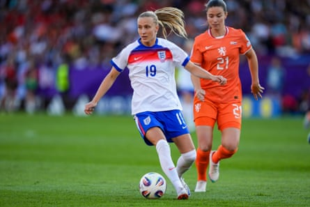

A ggie Beever-Jones doesn’t have much tournament experience. The England striker missed out on the 2020 under-17 Euros owing to Covid cancellations and featured at only the under-19s Euros in 2022, where she scored twice in the group stage against Norway, before arriving at Euro 2025.
By the time a player breaks into the senior side they usually have several tournaments under their belt but Covid means Beever-Jones is a part of the generation of young players coming through that lost out.
“I was unfortunate in that sense when I was growing up,” she says. “I’ve never really experienced tournament football and being away from family. It was a crazy time in the world; I think everyone was a bit unsure what was going on. We were lucky enough that football was able to carry on.
“That’s why I think it makes it a bit more special this time round. It is my first proper tournament and at the highest level. It’s exactly where I want to be. I feel comfortable enough to push for my place as well as getting pushed every day to become a better person and player. So I’m really, really enjoying it. Hopefully we can make our mark and keep going.”
The 21-year-old made her senior tournament debut on Wednesday night, coming on in place of Alessia Russo in the 84th minute of England’s 4-0 defeat of the Netherlands , and hopes to play a part on Sunday against Wales. The Chelsea forward’s former manager Emma Hayes spoke of the impact Beever-Jones could have on the international stage at the end of her tenure at the club, saying: “Aggie Beever-Jones. Don’t forget that name. She’s going to be a legend not just for Chelsea but for England.”
Beever-Jones says she feels “extremely lucky” to have achieved her goal of getting to these Euros and reflects on Hayes’ assessment by saying: “For Emma to say those words about me, that probably is one of the best compliments I’ve ever had, and from such an incredible person. I’m just looking to help where I can and enjoy it. I’ve always said I play my best football when I’m enjoying it.”
Aggie Beever-Jones got her chance against the Netherlands and has told coach Sarina Wiegman she will be ready for any opportunity.Photograph: Daniela Porcelli/Getty Images
Making sure you enjoy it off the pitch matters too at a tournament. Taking photos is one of Beever-Jones’s means of distraction. “There’s a few of us,” she says. “I know Alex [Greenwood] bought a camera recently. It’s just nice to find some hobbies outside of football sometimes. The prints are in my journal – got a few Polaroids stuck in there … it’s finding the beauty in the little things and just being able to explore a beautiful city and enjoy it.”
Stepping out of the team bubble to hang out with family and friends also helps. “It’s refreshing to come out of that bubble sometimes and take a step back to spend time with your family and not talk about football,” says Beever-Jones. “My sister’s not a football-head at all so I just talk to her about everything but football. She’s a midwife; I talk a lot to her about her work. She has her boyfriend here who’s equally one of my best friends and it’s just nice to have that relationship. And equally with my mum and dad as well, just spending time and having a general family catchup. It’s a great balance of: you come here, you switch on, we have the bubble, and, equally, you can go out and have a coffee and enjoy time with your family and switch off from football.”
Beever-Jones waits for the chance to make her mark on this tournament and announce herself on the world stage like Alessia Russo and Ella Toone did as England’s super subs in 2022.
“That would be the dream,” she says. “For me, it’s about trusting Sarina [Wiegman] and trusting the process. We have a squad full of incredible players. I just have to take my opportunity when it comes. I was grateful to come on the other day and show a little bit of what I can do. Hopefully I get some more opportunities to do that.”
Was it disheartening not to feature in the opening defeat by France , with Michelle Agyemang the player who came on? “Me and Sarina had a conversation and ultimately I have to respect her decision,” she says. “She did say it was a tough game and she looked elsewhere to bring other people on and I just have to respect that. I know my strengths and I have done it for two years coming off the bench for Chelsea and hopefully making an impact.
“Sarina is well aware of that and I respected that decision. She knows I’ll be ready no matter what, whenever the time comes. I’m just delighted we were able to turn it around the other night. It doesn’t mean anything if we don’t go and beat Wales.”